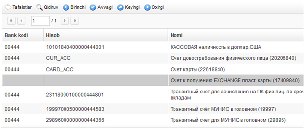
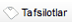
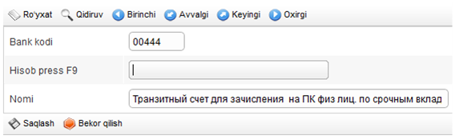
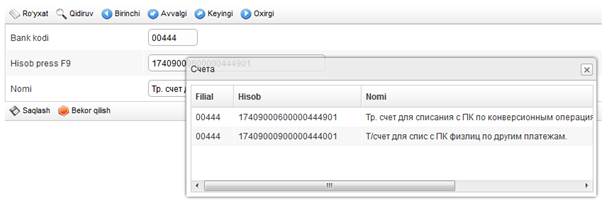
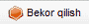

Hisob raqamlarni sozlash |
  
|
Hisob raqamlarni sozlash |
|
«MUNIS» tizimi orqali to‘lovlarni amalga oshirish uchun o‘tkazmalarda qatnashayotgan hisobraqamlarni sozlash kerak bo‘ladi.
Bankning Bosh bo‘limi hisobraqamlarning namunasini belgilaydi, filialda esa namunalarga muvofiq, «MUNIS» tizimida ishlash uchun muayyan 20ta raqamli buxgalteriya hisobraqamlarini ko‘rsatish kerak bo‘ladi.
Hisobraqamlarni sozlash moduli quyidagi menyu bandida joylashgan: «Modullar \ Kommunal to’lovlar \ Kom. Hisob raqamlarni sozlash» (1- rasmgaqarang).

1- rasm
Modulda ishlash hisobraqamlar ro‘yxatidan boshlanadi (2- rasmga qarang).

2- rasm
Sozlangan hisobraqamlar uchun ro‘yxatdagi uchchala maydoncha to‘ldirilgan bo‘ladi: «Bank kodi», «Hisob», «Nomi». Ushbu filialda sozlanishi lozim bo‘ladigan hisobraqamlar uchun «Bank kodi» va «Hisob» maydonchalari bo‘sh bo‘lib, faqat «Nomi» maydonchasi to‘ldirilgan, unda joriy yozuv uchun qaysi turdagi hisobraqamni qo‘llash kerakligi ko‘rsatilgan bo‘ladi.
Hisobraqam sozlamalari kartochkasini ochish uchun ro‘yxat yozuvi tanlanadi va ro‘yxatning tepasidagi boshqaruv panelida joylashgan

tugmasi bosiladi.Hisobraqam sozlamalari kartochkasi quyidagi maydonchalarga ega (3- rasmga qarang):

3- rasm
•Bank kodi – filial MFO kodi. Maydoncha klaviatura orqali to‘ldiriladi. To‘ldirilishi majburiy.
•Hisob – Filialda qo‘llaniladigan turdagi real hisobraqam. Maydoncha qalqaib chiquvchi ro‘yxatdan tanlash orqali to‘ldiriladi. Ro‘yxat «F9» klavishini bosish orqali faollashtiriladi (4-rasmga qarang). To‘ldirilishi majburiy.
•Nomi – Hisobraqam nomi. Bu maydoncha avtomatik ravishda, «Hisob» maydonida hisobraqam tanlanganida to‘ldiriladi, lekin qo‘lda, klaviatura orqali o‘zgartirilishi mumkin.

4 - rasm
Sozlamalarni saqlash uchun tugmasidan foydalanish zarur.
Kartochkaga kiritilgan o‘zgartishlarni bekor qilish uchun

tugmasidan foydalaniladi.